Creating a physical interactive platform that utilizes collaborative storytelling to teach middle-schoolers that college is a pathway to the entertainment technology industry.
BusyBurgh - Little Owl Construction Co.
A JA Biztown and TinyTowns-inspired mini CMU to ger middle-schoolers interested in college education.
UI/UX designer on a project teaching kids to tell a story using animatronics through set design, block code, show controls, and sound design - as an amalgamation of CMU's entertainment technology program and JA Biztown's career-readiness methodology.
ROLE UI/UX Designer
TIMELINE
1 semester
CLIENT
John Balash
CO-DESIGNER
The Boys and Girls Clubs of Western Pennsylvania
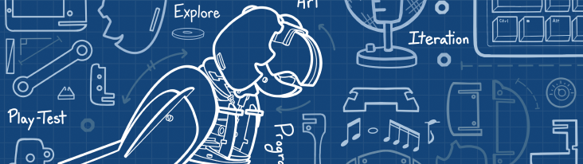


Branding
Worked with our artist, Melanie Danver, to create design documentation for the project and brand identity.
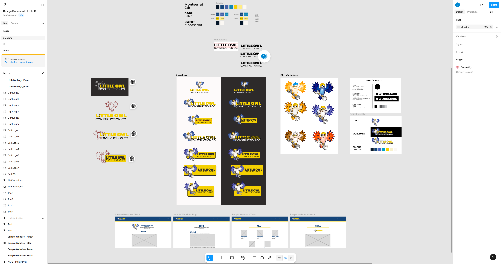
Ideation for project branding.
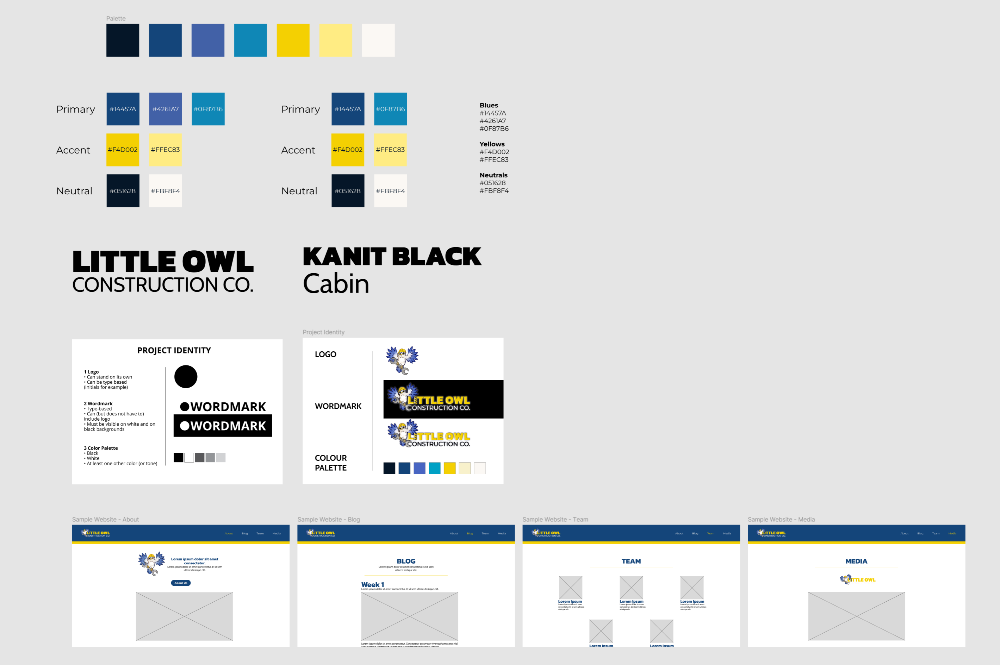
Design documentation for project branding.
Paper Protyping
Created paper prototypes for the programming and lighting design stations, which we playtested along with out physical story station, and our digital low-fidelity art and sound station prototypes.

Paper prototype setup

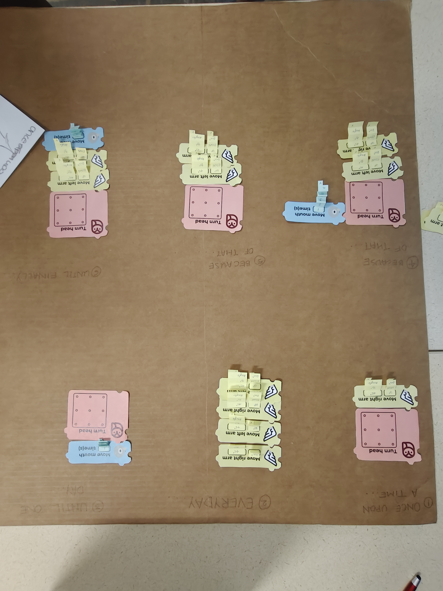
Story station paper prototype by Courtney Singleton, and programming station paper prototype by me

Lighting stations show control system paper prototype by me


Playtesting at CMU
Design Thinking
Used design thinking methodologies like crazy 8s for the UI interations.

Ideating the UI to turn the bird's head
Wireframes
Created wireframes for all the digital stations.
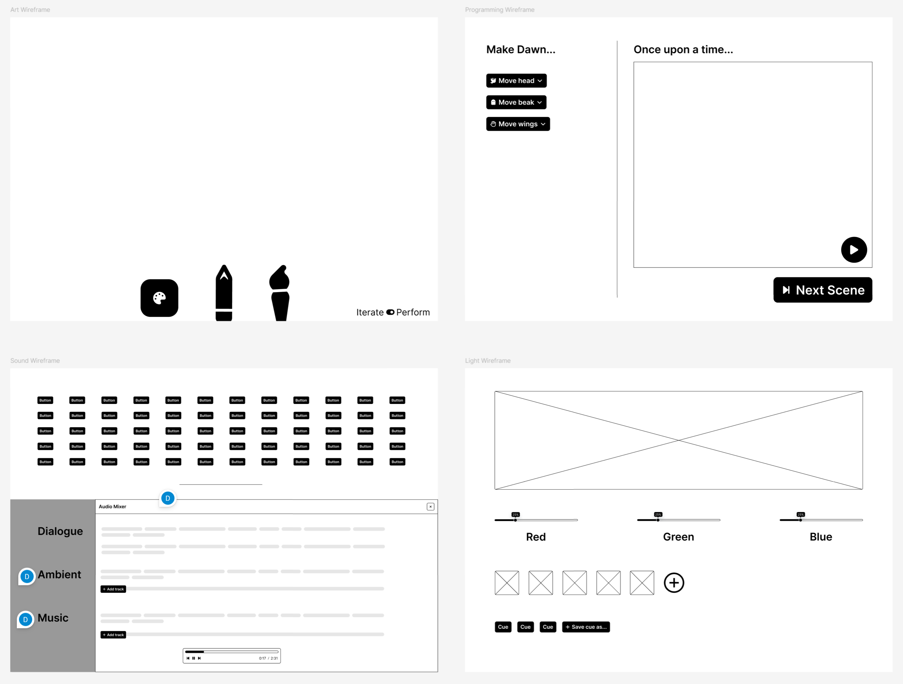
Wireframes for 4 stations - art, programming, sound design, and lighting.
Art Station


Wireframes for art station flow.


Dropdown assets wireframes.


Wireframes for tool selection.


Colour selection wireframes.


Pattern designs.


Testing on Unity and reiterating.

Assets and iterations for UI resizing.

Final asset library for art station.
Programming Station
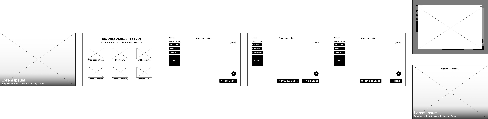
Wireframes for programming station flow.


Initial theming experimentation.


New theming experimentation.

Final programming station.
Lighting Station


Wireframes for lighting station flow.
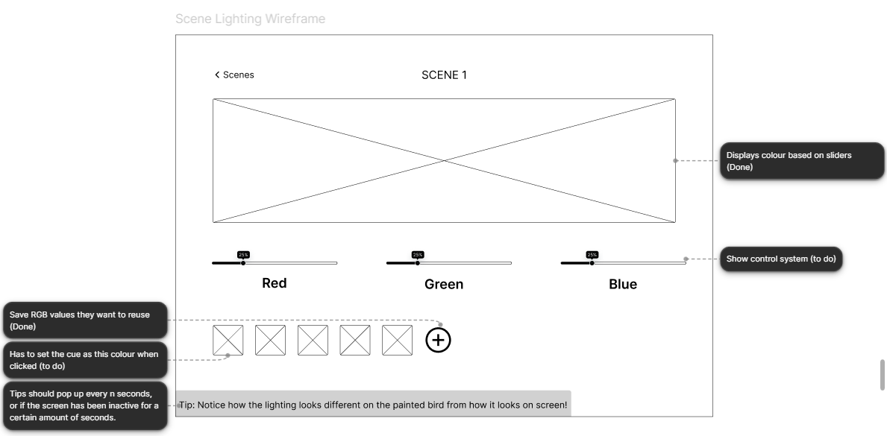
Annotations for lighting station functionality for hand-off to programmer.


Initial colour palette exploration.


Exploring with toggles when we realised the RGB lights we ordered were discontinued and we might have to work with white lights with gel filters and toggle them on and off.


New lighting prototype for porting with programming station.
This was for when we made a 2-step workflow where guests moved from art and programming (phase 1) to lighting and sound (phase 2), respectively.
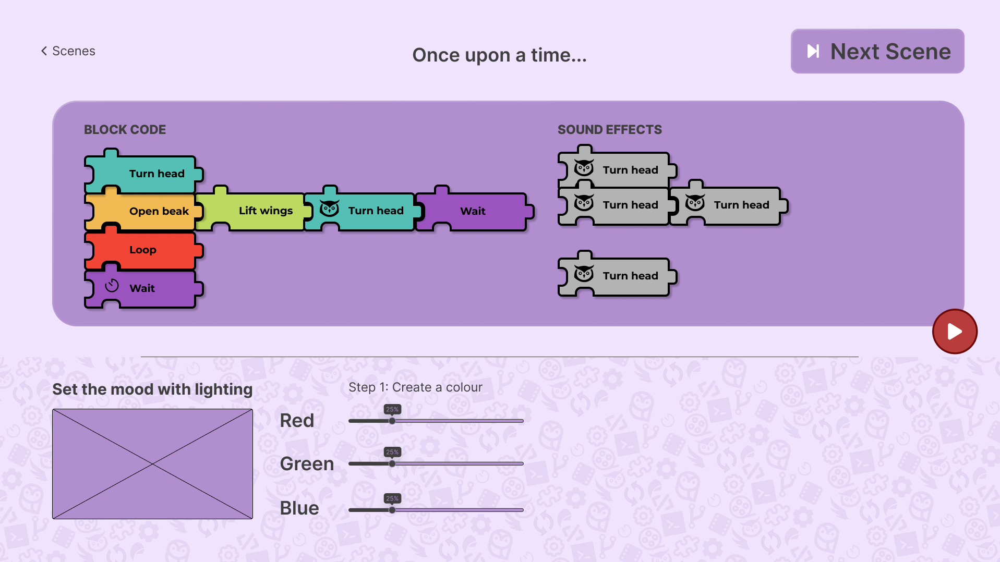
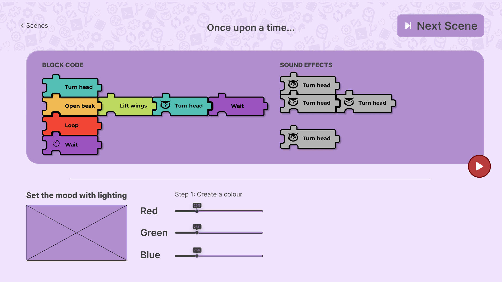
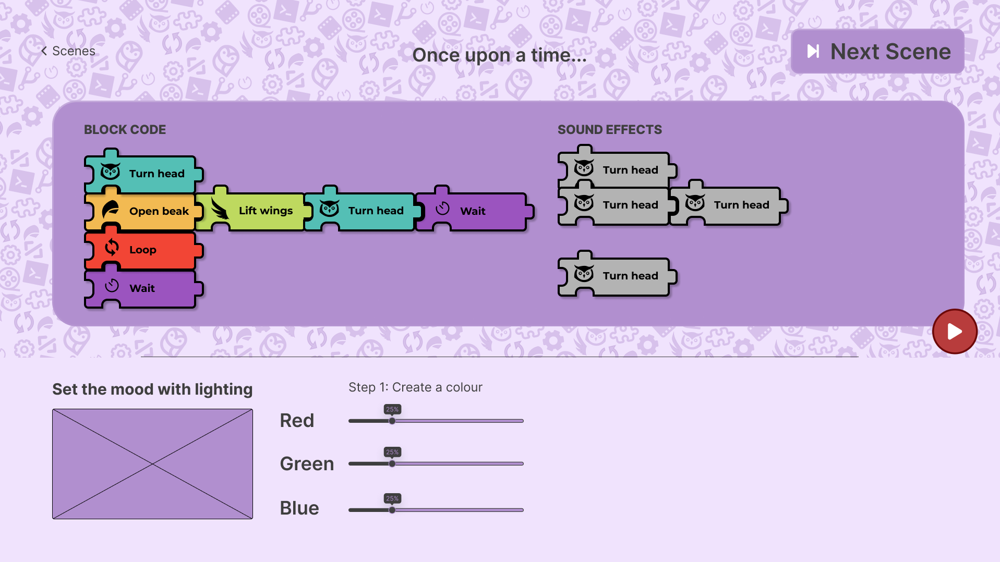
Pattern designs.
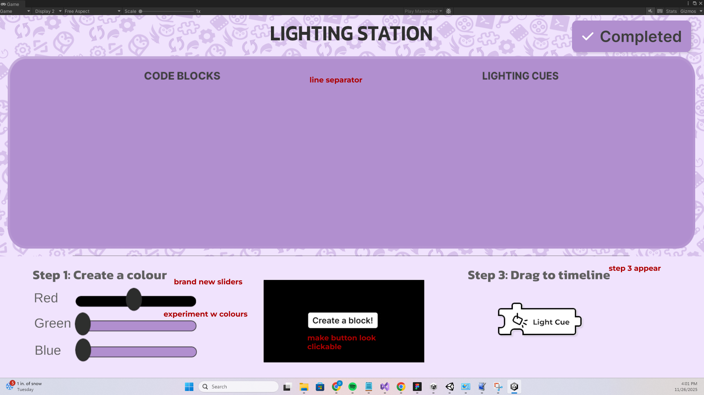
Testing on Unity and reiterating.


Attempts at simplifying the UI.

Final simplified UI.
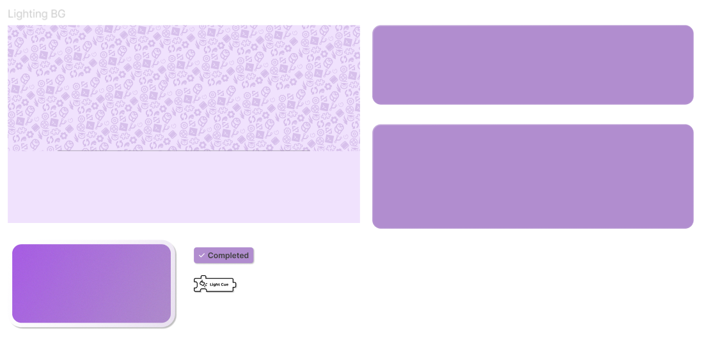
Final asset library for lighting station.
Sound Station


Wireframes for sound station flow - version 1 with a big record button.
This version was for when we wanted guests to record audio and dialogue for the animatronic show.


Wireframes for sound station flow - version 2 with a sound library button.
By this iteration, we had decided we wanted the wait screens to have videos of students who are experts in the role at the station describing their backgrounds and aspirations.


Testing how to combine programming movement blocks to leave space for sound blocks. (Iteration scrapped)


Figuring out how to teach kids sound mixing with interesting controls - sliders and knobs. (Iteration scraped)

Final interface design.


Background pattern iterations.
Facilitator Station

Wireframes for facilitator station.


Testing overlays for facilitator station UI.
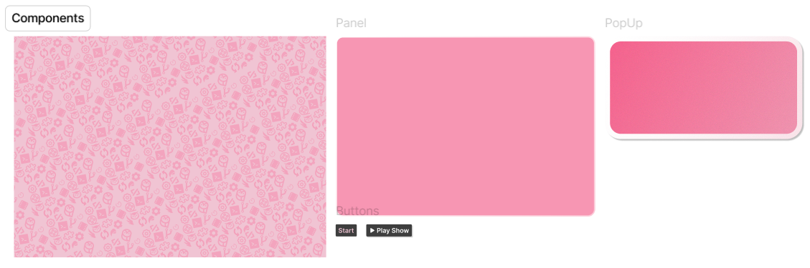
Asset library for handoff to future teams.
More
For weekly dev logs written by our producer, Ean McFadden, visit our website at https://projects.etc.cmu.edu/little-owl-construction-co/